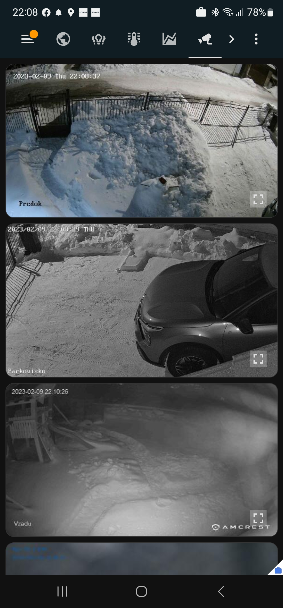

Čo všetko vieme ovládať?
Naozaj skoro všetko. Nemusíte meniť vaše zariadenia, vieme použiť už tie, ktoré máte.
Osvetlenie
- stmievanie
- teplota svetla / farba
- vnútorné a vonkajšie osvetlenie a LED pásy
- na senzor (pohyb či otvorenia dverí)
- simulácia prítomnosti doma
- automatický jas a teplota svetla podľa podmienok
Tienenie
- vonkajšie žalúzie
- rolety
- vnútorné žalúzie
- závesy


Bezpečnosť
- alarm
- kamerový systém
- pohybové senzory
- zámok dverí
- senzory zatopenia
- senzory dymu
Kúrenie a chladenie
- elektrické kúrenie
- podlahové vodné kurenie (plyn, tepelné čerpadlo)
- klimatizácie
- termostaty a teplotné senzory
- senzory vlhkosti
A ďalšie...
- Zavlažovanie
- Bazén (filtrácia, chémia, ohrev)
- Hlasové ovládanie
- Reproduktory
- Vetranie (rekuperácia i ventilátor)
- Meranie spotreby (elektriny, plynu, vody)
- Fotovoltika
- Ovládanie brány / garáže
- Video vrátnik (s možnosťou notifikácie na TV ak niekto zvoní)
- Prepojenie s autom
- Množstvo senzorov (pohybové, teplotné, kvalita vzduchu, vibrácie, senzory spánku)